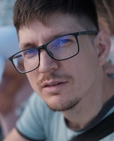

<div class="about-me">
  <div class="wrapper">
    <h1>{{ 'about.aboutAuthor' | translate }}</h1>
    
    <div *ngIf="currentLang == 'ru'">
      <p>Меня зовут <span itemprop="name">Михаил Ключко</span>, мне {{oldYears}} год.</p>
      <p>
        Я <b>Full-Stack</b> разработчик по призванию со стеком технологий <b>.NET</b> и <b>Angular</b>. У меня есть опыт
        работы <b>более {{workExperienceYears}} лет</b> в разработке настольных приложений, с клиент-серверной
        архитектурой, и веб-сайтов. Я имею <a href="#education">профильное образование</a> и обладаю обширными
        техническими знаниями и вниманием к деталям для написания программ свободных от ошибок. Я перфекционист по
        природе и методично все тестирую.
      </p>
      <p>
        Мне нравится работать над проектами в команде, которая заботится о высоком качестве приложений и удобстве
        пользовательских интерфейсов. Для меня важно построение длительных взаимоотношений с клиентами, поэтому в
        первую очередь я ищу долгосрочные проекты. Болею и живу своим делом.
      </p>
      <p>Другую интересную информацию обо мне можно получить из социальных сервисов:
        <a href="//github.com/slidenergy"
           target="_blank"
           rel="nofollow">GitHub</a>,
        <a href="//linkedin.com/in/slidenergy"
           target="_blank"
           rel="nofollow">LinkedIn</a>.
      </p>
    </div>
    <div *ngIf="currentLang == 'en'">
      <p>My name is <span itemprop="name">Michael Kluchko</span>, I am {{oldYears}} years old.</p>
      <p>
        I am <b>Full-Stack</b> developer by birth with technology stack of <b>.NET</b> and <b>Angular</b>. I have
        <b>more than {{workExperienceYears}} years</b> of experience in developing desktop applications, with
        client-server architecture, and web-sites. I have a <a href="#education">profile education</a> and have extensive technical
        knowledge and attention to detail for bug-free software. I am a perfectionist by nature and I test everything
        methodically.
      </p>
      <p>
        I like working on projects with a team that cares about high quality applications and usable interfaces.
        Building a long term relationship with clients is important for me. So, in the first place I am looking for
        long-term projects. I love my job and live for this.
      </p>
      <p>You can find additional information about me on my social platforms:
        <a href="//github.com/slidenergy"
           target="_blank"
           rel="nofollow">GitHub</a>,
        <a href="//linkedin.com/in/slidenergy"
           target="_blank"
           rel="nofollow">LinkedIn</a>.
      </p>
    </div>
  </div>
</div>
